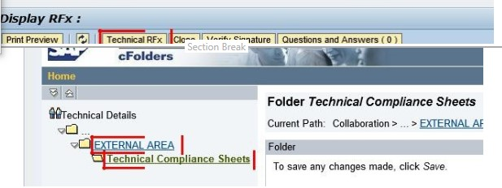

Display of Technical Compliance Sheets of other Bidders
For two-bid tenders, bidder can view the Technical Compliance Sheets of other bidders after the Technical Bid Opening Date/Time is over and the Technical Bids are opened.
- Open the Tender numbe r by logging in to SRM Portal with User ID and Password.
- Click on the Technical RF x button as shown below

- By clicking on the ‘Technical Compliance Sheets’ folder, each bidder’s Company’s name who submitted b id against the tender and the Technical Com pliance Sheet uploaded by the bidder can be seen against the name of the company as shown below

- The Technical Compliance Sheet uploaded by each bidder can be downloaded by right-clicking on the file and selecting ‘Save Target as’ option.